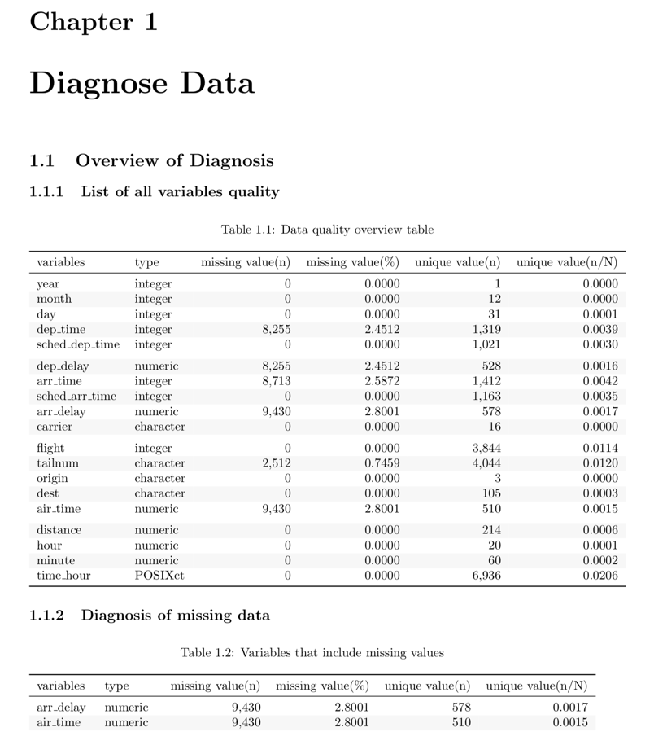

dlookr: 데이터진단, EDA, 데이터변환을 위한 패키지
개요
dlookr은 데이터 분석과정에서 데이터 품질진단, EDA 및 변수변환을 지원하는 신규 패키지다. 이 패키지는 dplyr 패키지와 협업하여 데이터를 탐색하고 조작할 수있는 유연한 기능을 제공한다. 특히 자동화된 3종의 보고서는 데이터 품질진단, 탐색적 데이터분석(EDA), 데이터 변환을 수행하는데 훌륭한 가이드를 제공한다.
주요 기능:
- 데이터의 품질을 진단할 수 있다.
- 데이터의 탐색과 이해를 통해서 데이터 분석을 수행하기 위한 적절한 시나리오를 찾을 수 있다.
- 변수변환을 수행하거나 파생변수를 생성할 수 있다.
- 위 세가지 작업을 지원하는 자동화된 보고서를 생성한다.
dlookr이라는 이름은 데이터 분석 과정에서 looking at the data에서 유래하여 작명하였다.
dlookr 설치
CRAN에 등록된, 릴리즈된 패키지는 다음과 같이 설치한다.:
install.packages("dlookr")혹은 GitHub에 등록된 vignettes이 없는 개발버전은 다음처럼 설치한다.:
devtools::install_github("choonghyunryu/dlookr")혹은 GitHub에 등록된 vignettes을 포함한 개발버전은 다음처럼 설치한다.
install.packages(c("nycflights13", "ISLR"))
devtools::install_github("choonghyunryu/dlookr", build_vignettes = TRUE)사용 방법
dlookr에는 몇 가지 vignette 파일을 포함하고 있는데, 이 포스트는 이를 기초로 작성하였다.
제공되는 vignette는 다음과 같다.
- Data quality diagnosis
- Exploratory Data Analysis
- Data Transformation
browseVignettes(package = "dlookr")데이터 품질진단
데이터: nycflights13
dlookr 패키지의 기초적인 사용 방법을 설명하기 위해서 nycflights13 패키지의 flights 데이터를 사용한다. flights 데이터 프레임은 2013년 NYC를 출발한 모든 항공편에 출발과 도착에 대한 정보를 담은 데이터다.
library(nycflights13)
dim(flights)
#> [1] 336776 19
flights
#> # A tibble: 336,776 x 19
#> year month day dep_time sched_dep_time dep_delay arr_time sched_arr_time
#> <int> <int> <int> <int> <int> <dbl> <int> <int>
#> 1 2013 1 1 517 515 2 830 819
#> 2 2013 1 1 533 529 4 850 830
#> 3 2013 1 1 542 540 2 923 850
#> 4 2013 1 1 544 545 -1 1004 1022
#> 5 2013 1 1 554 600 -6 812 837
#> 6 2013 1 1 554 558 -4 740 728
#> 7 2013 1 1 555 600 -5 913 854
#> 8 2013 1 1 557 600 -3 709 723
#> 9 2013 1 1 557 600 -3 838 846
#> 10 2013 1 1 558 600 -2 753 745
#> # … with 336,766 more rows, and 11 more variables: arr_delay <dbl>,
#> # carrier <chr>, flight <int>, tailnum <chr>, origin <chr>, dest <chr>,
#> # air_time <dbl>, distance <dbl>, hour <dbl>, minute <dbl>, time_hour <dttm>diagnose()을 이용한 변수의 개괄적 진단
diagnose()은 데이터 프레임의 변수를 진단한다. dplyr의 함수처럼 첫 번째 인수는 tibble(또는 데이터 프레임)이다. 두 번째 및 후속 인수는 해당 데이터 프레임 내의 변수를 나타낸다.
diagnose()가 반환하는 tbl_df 객체의 변수는 다음과 같다.
variables: 변수명types: 변수의 데이터 유형missing_count: 결측치 수missing_percent: 결측치의 백분율unique_count: 유일값의 수unique_rate: 유일값의 비율. unique_count / 관측치의 수
다음처럼 diagnose()는 flights의 모든 변수를 진단할 수 있다.:
library(dlookr)
library(dplyr)
diagnose(flights)
#> # A tibble: 19 x 6
#> variables types missing_count missing_percent unique_count unique_rate
#> <chr> <chr> <int> <dbl> <int> <dbl>
#> 1 year integer 0 0 1 0.00000297
#> 2 month integer 0 0 12 0.0000356
#> 3 day integer 0 0 31 0.0000920
#> 4 dep_time integer 8255 2.45 1319 0.00392
#> 5 sched_dep_ti… integer 0 0 1021 0.00303
#> 6 dep_delay numeric 8255 2.45 528 0.00157
#> 7 arr_time integer 8713 2.59 1412 0.00419
#> 8 sched_arr_ti… integer 0 0 1163 0.00345
#> 9 arr_delay numeric 9430 2.80 578 0.00172
#> 10 carrier charact… 0 0 16 0.0000475
#> 11 flight integer 0 0 3844 0.0114
#> 12 tailnum charact… 2512 0.746 4044 0.0120
#> 13 origin charact… 0 0 3 0.00000891
#> 14 dest charact… 0 0 105 0.000312
#> 15 air_time numeric 9430 2.80 510 0.00151
#> 16 distance numeric 0 0 214 0.000635
#> 17 hour numeric 0 0 20 0.0000594
#> 18 minute numeric 0 0 60 0.000178
#> 19 time_hour POSIXct 0 0 6936 0.0206결측치: 결측치가 아주 많은 변수, 즉 missing_percent가 100에 가까운 변수는 분석에서 제외하는 것을 고려해야 한다.유일값: 유일값이 하나인(unique_count = 1) 변수는 데이터 분석에서 제외하는 것을 고려한다. 그리고 데이터 유형이 수치형(integer, numeric)이 아니면서 유일값의 개수가 관측치의 개수와 같은(unique_rate = 1) 변수는 식별자일 확률이 크다. 그러므로 이 변수도 분석 모델에 적합치 않은 변수다.
year는 unique_count가 1이므로 분석 모델에 사용하지 않는 것을 고려할 수 있다. 다만 year, month, day의 조합으로 년월일을 구성하는 경우에는 굳이 제거하지 않아도 될 것이다.
다음은 선택된 몇 개의 변수에 대해서만 진단을 수행한다.:
# Select columns by name
diagnose(flights, year, month, day)
#> # A tibble: 3 x 6
#> variables types missing_count missing_percent unique_count unique_rate
#> <chr> <chr> <int> <dbl> <int> <dbl>
#> 1 year integer 0 0 1 0.00000297
#> 2 month integer 0 0 12 0.0000356
#> 3 day integer 0 0 31 0.0000920
# Select all columns between year and day (inclusive)
diagnose(flights, year:day)
#> # A tibble: 3 x 6
#> variables types missing_count missing_percent unique_count unique_rate
#> <chr> <chr> <int> <dbl> <int> <dbl>
#> 1 year integer 0 0 1 0.00000297
#> 2 month integer 0 0 12 0.0000356
#> 3 day integer 0 0 31 0.0000920
# Select all columns except those from year to day (inclusive)
diagnose(flights, -(year:day))
#> # A tibble: 16 x 6
#> variables types missing_count missing_percent unique_count unique_rate
#> <chr> <chr> <int> <dbl> <int> <dbl>
#> 1 dep_time integer 8255 2.45 1319 0.00392
#> 2 sched_dep_ti… integer 0 0 1021 0.00303
#> 3 dep_delay numeric 8255 2.45 528 0.00157
#> 4 arr_time integer 8713 2.59 1412 0.00419
#> 5 sched_arr_ti… integer 0 0 1163 0.00345
#> 6 arr_delay numeric 9430 2.80 578 0.00172
#> 7 carrier charact… 0 0 16 0.0000475
#> 8 flight integer 0 0 3844 0.0114
#> 9 tailnum charact… 2512 0.746 4044 0.0120
#> 10 origin charact… 0 0 3 0.00000891
#> 11 dest charact… 0 0 105 0.000312
#> 12 air_time numeric 9430 2.80 510 0.00151
#> 13 distance numeric 0 0 214 0.000635
#> 14 hour numeric 0 0 20 0.0000594
#> 15 minute numeric 0 0 60 0.000178
#> 16 time_hour POSIXct 0 0 6936 0.0206dplyr을 이용해서 결측치를 포함한 변수를 결측치의 비중별로 정렬할 수 있다.:
flights %>%
diagnose() %>%
select(-unique_count, -unique_rate) %>%
filter(missing_count > 0) %>%
arrange(desc(missing_count))
#> # A tibble: 6 x 4
#> variables types missing_count missing_percent
#> <chr> <chr> <int> <dbl>
#> 1 arr_delay numeric 9430 2.80
#> 2 air_time numeric 9430 2.80
#> 3 arr_time integer 8713 2.59
#> 4 dep_time integer 8255 2.45
#> 5 dep_delay numeric 8255 2.45
#> 6 tailnum character 2512 0.746diagnose_numeric()을 이용한 수치형 변수의 상세 진단
diagnose_numeric()은 데이터 프레임의 수치형(연속형과 이산형) 변수를 진단한다. 사용 방법은 diagnose()와 동일하나 더 많은 진단 정보를 반환한다. 그런데 두 번째 및 후속 인수 목록에 수치형이 아닌 변수를 지정하면 해당 변수는 자동적으로 무시한다.
diagnose_numeric()이 반환하는 tbl_df 객체의 변수는 다음과 같다.
min: 최소값Q1: 1/4분위수, 25백분위수mean: 산술평균median: 중위수, 50백분위수Q3: 3/4분위수, 75백분위수max: 최대값zero: 0의 값을 갖는 관측치의 개수minus: 음수를 갖는 관측치의 개수outlier: 이상치의 개수
데이터 프레임에 summary() 함수를 적용하면 수치형 변수의 min, Q1, mean, median, Q3 , max를 콘솔에 출력하여 데이터의 분포를 파악할 수 있도록 도와준다. 그러나 그 결과는 분석가가 눈으로만 살펴볼 수 밖에 없는 단점이 있다. 그런데 이런 정보들을 tbl_df와 같은 데이터 프레임 구조로 반환하면 활용의 범위가 넓어진다.
zero, minus, outlier는 데이터의 무결성을 진단하는데 유용한 측도다. 예를 들어 어떤 경우의 수치 데이터는 0이나 음수를 가질 수 없는 경우가 있기 때문이다. ’직원의 급여’라는 가상의 수치형 변수는 음수나 0을 가질 수 없기 때문에 데이터 진단 과정에서 0이나 음수의 포함 여부를 살펴보아야 한다.
다음처럼 diagnose_numeric()는 flights의 모든 수치형 변수를 진단할 수 있다.:
diagnose_numeric(flights)
#> # A tibble: 14 x 10
#> variables min Q1 mean median Q3 max zero minus outlier
#> <chr> <dbl> <dbl> <dbl> <dbl> <dbl> <dbl> <int> <int> <int>
#> 1 year 2013 2013 2013 2013 2013 2013 0 0 0
#> 2 month 1 4 6.55 7 10 12 0 0 0
#> 3 day 1 8 15.7 16 23 31 0 0 0
#> 4 dep_time 1 907 1349. 1401 1744 2400 0 0 0
#> 5 sched_dep_time 106 906 1344. 1359 1729 2359 0 0 0
#> 6 dep_delay -43 -5 12.6 -2 11 1301 16514 183575 43216
#> 7 arr_time 1 1104 1502. 1535 1940 2400 0 0 0
#> 8 sched_arr_time 1 1124 1536. 1556 1945 2359 0 0 0
#> 9 arr_delay -86 -17 6.90 -5 14 1272 5409 188933 27880
#> 10 flight 1 553 1972. 1496 3465 8500 0 0 1
#> 11 air_time 20 82 151. 129 192 695 0 0 5448
#> 12 distance 17 502 1040. 872 1389 4983 0 0 715
#> 13 hour 1 9 13.2 13 17 23 0 0 0
#> 14 minute 0 8 26.2 29 44 59 60696 0 0수치형 변수가 논리적으로 음수나 0의 값을 가질 수 없을 경우에, filter()로 논리적으로 부합하지 않은 변수를 쉽게 찾아낸다.:
diagnose_numeric(flights) %>%
filter(minus > 0 | zero > 0)
#> # A tibble: 3 x 10
#> variables min Q1 mean median Q3 max zero minus outlier
#> <chr> <dbl> <dbl> <dbl> <dbl> <dbl> <dbl> <int> <int> <int>
#> 1 dep_delay -43 -5 12.6 -2 11 1301 16514 183575 43216
#> 2 arr_delay -86 -17 6.90 -5 14 1272 5409 188933 27880
#> 3 minute 0 8 26.2 29 44 59 60696 0 0diagnose_category()을 이용한 범주형 변수의 상세 진단
diagnose_category()은 데이터 프레임의 범주형(factor, ordered, character) 변수를 진단한다. 사용 방법은 diagnose()와 유사하나 더 많은 진단 정보를 반환한다. 그런데 두 번째 및 후속 인수 목록에 범주형이 아닌 변수를 지정하면 해당 변수는 자동적으로 무시한다. top 인수는 변수별로 반환할 수준(levels)의 개수를 지정한다. 기본값은 10으로 상위 top 10의 수준을 반환한다. 물론 수준의 개수가 10개 미만일 경우에는 모든 수준을 반환한다.
diagnose_category()이 반환하는 tbl_df 객체의 변수는 다음과 같다.
variables: 변수의 이름levels: 수준의 이름N: 관측치의 수freq: 수준별 도수(frequency)ratio: 수준별 상대도수(백분율 표현)rank: 레벨별 도수 크기의 순위
다음처럼 diagnose_category()는 flights의 모든 범주형 변수를 진단할 수 있다.:
diagnose_category(flights)
#> # A tibble: 33 x 6
#> variables levels N freq ratio rank
#> <chr> <chr> <int> <int> <dbl> <int>
#> 1 carrier UA 336776 58665 17.4 1
#> 2 carrier B6 336776 54635 16.2 2
#> 3 carrier EV 336776 54173 16.1 3
#> 4 carrier DL 336776 48110 14.3 4
#> 5 carrier AA 336776 32729 9.72 5
#> 6 carrier MQ 336776 26397 7.84 6
#> 7 carrier US 336776 20536 6.10 7
#> 8 carrier 9E 336776 18460 5.48 8
#> 9 carrier WN 336776 12275 3.64 9
#> 10 carrier VX 336776 5162 1.53 10
#> # … with 23 more rowsdplyr 패키지의 filter()와 협업하여 결측치가 top 10에 포함된 사례를 조회한 결과에서 tailnum 변수가 2,512건의 결측치로 top 1에 랭크된 것을 알 수 있다.:
diagnose_category(flights) %>%
filter(is.na(levels))
#> # A tibble: 1 x 6
#> variables levels N freq ratio rank
#> <chr> <chr> <int> <int> <dbl> <int>
#> 1 tailnum <NA> 336776 2512 0.746 1다음은 수준이 차지하는 비중이 0.01% 이하인 목록을 반환한다. top 인수값을 500으로 넉넉하게 지정한 것에 주목해야 한다. 만약 기본값인 10을 사용하였다면 0.01% 이하의 값은 목록에 포함되지 못했을 것이다.:
flights %>%
diagnose_category(top = 500) %>%
filter(ratio <= 0.01)
#> # A tibble: 10 x 6
#> variables levels N freq ratio rank
#> <chr> <chr> <int> <int> <dbl> <int>
#> 1 carrier OO 336776 32 0.00950 16
#> 2 dest JAC 336776 25 0.00742 97
#> 3 dest PSP 336776 19 0.00564 98
#> 4 dest EYW 336776 17 0.00505 99
#> 5 dest HDN 336776 15 0.00445 100
#> 6 dest MTJ 336776 15 0.00445 101
#> 7 dest SBN 336776 10 0.00297 102
#> 8 dest ANC 336776 8 0.00238 103
#> 9 dest LEX 336776 1 0.000297 104
#> 10 dest LGA 336776 1 0.000297 105분석 모델에서 관측치에서 차지하는 비중이 미미한 수준들은 제거하거나 하나로 합치는 것도 고려해볼 수 있다.
diagnose_outlier()를 이용한 이상치 진단
diagnose_outlier()은 데이터 프레임의 수치형(연속형과 이산형) 변수의 이상치(outliers)를 진단한다. 사용 방법은 diagnose()와 동일하다.
diagnose_outlier()이 반환하는 tbl_df 객체의 변수는 다음과 같다.
outliers_cnt: 이상치의 개수outliers_ratio: 이상치의 비율(백분율)outliers_mean: 이상치들의 산술평균with_mean: 이상치를 포함한 전체 관측치의 평균without_mean: 이상치를 제거한 관측치의 산술평균
다음처럼 diagnose_outlier()는 flights의 모든 수치형 변수의 이상치를 진단할 수 있다.:
diagnose_outlier(flights)
#> # A tibble: 14 x 6
#> variables outliers_cnt outliers_ratio outliers_mean with_mean without_mean
#> <chr> <int> <dbl> <dbl> <dbl> <dbl>
#> 1 year 0 0 NaN 2013 2013
#> 2 month 0 0 NaN 6.55 6.55
#> 3 day 0 0 NaN 15.7 15.7
#> 4 dep_time 0 0 NaN 1349. 1349.
#> 5 sched_dep_t… 0 0 NaN 1344. 1344.
#> 6 dep_delay 43216 12.8 93.1 12.6 0.444
#> 7 arr_time 0 0 NaN 1502. 1502.
#> 8 sched_arr_t… 0 0 NaN 1536. 1536.
#> 9 arr_delay 27880 8.28 121. 6.90 -3.69
#> 10 flight 1 0.000297 8500 1972. 1972.
#> 11 air_time 5448 1.62 400. 151. 146.
#> 12 distance 715 0.212 4955. 1040. 1032.
#> 13 hour 0 0 NaN 13.2 13.2
#> 14 minute 0 0 NaN 26.2 26.2다음은 이상치를 5% 이상 포함한 수치형 변수중에서 이상치의 평균이 전체 평균대비 규모가 큰 순으로 정렬하여 반환한다.:
diagnose_outlier(flights) %>%
filter(outliers_ratio > 5) %>%
mutate(rate = outliers_mean / with_mean) %>%
arrange(desc(rate)) %>%
select(-outliers_cnt)
#> # A tibble: 2 x 6
#> variables outliers_ratio outliers_mean with_mean without_mean rate
#> <chr> <dbl> <dbl> <dbl> <dbl> <dbl>
#> 1 arr_delay 8.28 121. 6.90 -3.69 17.5
#> 2 dep_delay 12.8 93.1 12.6 0.444 7.37데이터 분석 과정에서 이상치의 평균이 전체 평균대비 규모가 클 경우에는 이상치를 대체하거나 제거하는 것이 바람직할 수 있다.
plot_outlier()를 이용한 이상치의 시각화
plot_outlier()은 데이터 프레임의 수치형(연속형과 이산형) 변수의 이상치(outliers)를 시각화한다. 사용 방법은 diagnose()와 동일하다.
plot_outlier()이 시각화하는 플롯은 다음을 포함한다.
- 이상치를 포함한 박스플롯
- 이상치를 제거한 박스플롯
- 이상치를 포함한 히스토그램
- 이상치를 제거한 히스토그램
다음은 diagnose_outlier()와 plot_outlier(), dplyr 패키지의 함수를 사용하여 이상치의 비율이 0.5% 이상인 모든 수치형 변수의 이상치를 시각화 한다.
flights %>%
plot_outlier(diagnose_outlier(flights) %>%
filter(outliers_ratio >= 0.5) %>%
select(variables) %>%
unlist())


시각화 결과를 보고 이상치의 제거 및 대체 여부를 결정해야 한다. 경우에 따라서는 이상치가 포함된 변수를 데이터 분석 모델에서 제거하는 것도 고려해야 한다.
시각화 결과를 보면 arr_delay는 이상치를 제거한 관측치들은 정규분포와 유사한 분포를 보이고 있다. 선형 모형의 경우에는 이상치를 제거하거나 대체하는 것도 검토해볼 수 있겠다. 그리고 air_time은 이상치를 제거하기 전후의 분포가 대략 비슷한 모양을 보인다.
탐색적 데이터 분석
datasets
dlookr 패키지로 EDA를 수행하는 기초적인 사용 방법을 설명하기 위해서 Carseats를 사용한다.
ISLR 패키지의 Carseats는 400개의 매장에서 아동용 카시트를 판매하는 시뮬레이션 데이터다. 이 데이터는 판매량을 예측하는 목적으로 생성한 데이터 프레임이다.
library(ISLR)
str(Carseats)
#> 'data.frame': 400 obs. of 11 variables:
#> $ Sales : num 9.5 11.22 10.06 7.4 4.15 ...
#> $ CompPrice : num 138 111 113 117 141 124 115 136 132 132 ...
#> $ Income : num 73 48 35 100 64 113 105 81 110 113 ...
#> $ Advertising: num 11 16 10 4 3 13 0 15 0 0 ...
#> $ Population : num 276 260 269 466 340 501 45 425 108 131 ...
#> $ Price : num 120 83 80 97 128 72 108 120 124 124 ...
#> $ ShelveLoc : Factor w/ 3 levels "Bad","Good","Medium": 1 2 3 3 1 1 3 2 3 3 ...
#> $ Age : num 42 65 59 55 38 78 71 67 76 76 ...
#> $ Education : num 17 10 12 14 13 16 15 10 10 17 ...
#> $ Urban : Factor w/ 2 levels "No","Yes": 2 2 2 2 2 1 2 2 1 1 ...
#> $ US : Factor w/ 2 levels "No","Yes": 2 2 2 2 1 2 1 2 1 2 ...개별 변수들의 의미는 다음과 같다. (ISLR::Carseats Man page 참고)
- Sales
- 지역의 단위 판매량 (단위: 천개)
- CompPrice
- 지역의 경쟁 업체가 부과하는 가격
- Income
- 지역 공동체 수입 수준 (단위: 천달러)
- Advertising
- 회사의 지역에 대한 광고 예산 (단위: 천달러)
- Population
- 지역의 인구 규모 (단위: 천명)
- Price
- 지역의 자동차 좌석 요금
- ShelveLoc
- 각 사이트에서 자동차 좌석의 선반 위치의 품질을 나타내는 수준. “Bad”, “Good”, “Medium”.
- Age
- 각 지역의 평균 연령
- Education
- 각 지역의 교육 수준
- Urban
- 점포의 도시 또는 농촌 소재 여부. Yes는 도시, No는 농촌.
- US
- 점포의 미국 소재 여부. Yes는 미국 소재, No는 미국 외 소재.
데이터 분석을 수행할 때, 결측치가 포함된 데이터를 자주 접한다. 그러나 Carseats는 결측치가 없은 완전한 데이터다. 그래서 다음과 같이 결측치를 생성하였다. 그리고 carseats라는 이름의 데이터 프레임 객체를 생성한다.
carseats <- ISLR::Carseats
set.seed(123)
carseats[sample(seq(NROW(carseats)), 20), "Income"] <- NA
set.seed(456)
carseats[sample(seq(NROW(carseats)), 10), "Urban"] <- NA단변량 데이터 EDA
describe()을 이용한 기술통계량 계산
describe()는 수치 데이터의 기술통계량을 계산해 준다. 기술통계량은 수치 변수의 분포를 판단하는 것을 도와준다.
describe()가 반환하는 tbl_df 객체의 변수는 다음과 같다.
n: 결측치를 제외한 데이터 건수na: 결측치 건수mean: 산술평균sd: 표준편차se_mean: 표준오차. sd/sqrt(n)IQR: 사분위 범위(Interquartile range) (Q3-Q1)skewness: 왜도kurtosis: 첨도p25: Q1. 25% 백분위수p50: 중위수. 50% 백분위수p75: Q3. 75% 백분위수p01,p05,p10,p20,p30` : 1%, 5%, 20%, 30% 백분위수p40,p60,p70,p80` : 40%, 60%, 70%, 80% 백분위수p90,p95,p99,p100` : 90%, 95%, 99%, 100% 백분위수
다음처럼 describe()는 carseats의 모든 수치 변수의 통계량을 계산한다.:
describe(carseats)
#> # A tibble: 8 x 26
#> variable n na mean sd se_mean IQR skewness kurtosis p00
#> <chr> <int> <int> <dbl> <dbl> <dbl> <dbl> <dbl> <dbl> <dbl>
#> 1 Sales 400 0 7.50 2.82 0.141 3.93 0.186 -0.0809 0
#> 2 CompPri… 400 0 125. 15.3 0.767 20 -0.0428 0.0417 77
#> 3 Income 380 20 69.3 28.1 1.44 48 0.0360 -1.10 21
#> 4 Adverti… 400 0 6.64 6.65 0.333 12 0.640 -0.545 0
#> 5 Populat… 400 0 265. 147. 7.37 260. -0.0512 -1.20 10
#> 6 Price 400 0 116. 23.7 1.18 31 -0.125 0.452 24
#> 7 Age 400 0 53.3 16.2 0.810 26.2 -0.0772 -1.13 25
#> 8 Educati… 400 0 13.9 2.62 0.131 4 0.0440 -1.30 10
#> # … with 16 more variables: p01 <dbl>, p05 <dbl>, p10 <dbl>, p20 <dbl>,
#> # p25 <dbl>, p30 <dbl>, p40 <dbl>, p50 <dbl>, p60 <dbl>, p70 <dbl>,
#> # p75 <dbl>, p80 <dbl>, p90 <dbl>, p95 <dbl>, p99 <dbl>, p100 <dbl>왜도: 왼쪽으로 치우친 분포의 데이터, 즉 skewness가 제법 큰 양수를 갖는 변수는 정규분포를 따르도록 log, sqrt 변환 등을 고려해야 한다. Advertising 변수는 변수변환을 고려해야할 것 같다.산술평균,표준편차,표준오차: 표준오차(se_mean)가 7.3688218로 상당히 큰Population는 대표치인 산술평균(mean)의 대표성이 낮다. 산술평균에 비해서 표준편차(sd)의 크기도 상당히 큰 편이다.
dplyr을 이용해서 왼쪽이나 오른쪽으로 치우친 정도(왜도)의 크기별로 정렬할 수 있다.:
carseats %>%
describe() %>%
select(variable, skewness, mean, p25, p50, p75) %>%
filter(!is.na(skewness)) %>%
arrange(desc(abs(skewness)))
#> # A tibble: 8 x 6
#> variable skewness mean p25 p50 p75
#> <chr> <dbl> <dbl> <dbl> <dbl> <dbl>
#> 1 Advertising 0.640 6.64 0 5 12
#> 2 Sales 0.186 7.50 5.39 7.49 9.32
#> 3 Price -0.125 116. 100 117 131
#> 4 Age -0.0772 53.3 39.8 54.5 66
#> 5 Population -0.0512 265. 139 272 398.
#> 6 Education 0.0440 13.9 12 14 16
#> 7 CompPrice -0.0428 125. 115 125 135
#> 8 Income 0.0360 69.3 44 69 92describe() 함수는 dplyr 패키지의 group_by() 함수 구문을 지원한다.
carseats %>%
group_by(US, Urban) %>%
describe(Sales, Income)
#> # A tibble: 12 x 28
#> variable US Urban n na mean sd se_mean IQR skewness kurtosis
#> <chr> <fct> <fct> <dbl> <dbl> <dbl> <dbl> <dbl> <dbl> <dbl> <dbl>
#> 1 Sales No No 44 0 6.42 2.78 0.418 3.29 0.132 1.41
#> 2 Sales No Yes 94 0 7.00 2.56 0.264 3.49 0.491 0.347
#> 3 Sales No <NA> 4 0 7.04 1.04 0.518 1.26 -0.887 -0.834
#> 4 Sales Yes No 71 0 8.21 2.61 0.310 4.08 -0.0453 -0.778
#> 5 Sales Yes Yes 181 0 7.77 2.95 0.219 3.99 0.134 -0.166
#> 6 Sales Yes <NA> 6 0 6.84 3.70 1.51 4.87 0.599 -0.822
#> 7 Income No No 40 4 62.1 29.8 4.72 51.8 0.367 -1.14
#> 8 Income No Yes 91 3 67.5 27.4 2.87 48 0.0518 -1.12
#> 9 Income No <NA> 3 1 59.7 37.0 21.4 37 -0.162 NA
#> 10 Income Yes No 68 3 70.2 30.7 3.72 53 0.0414 -1.19
#> 11 Income Yes Yes 172 9 71.4 26.5 2.02 45 -0.0201 -0.989
#> 12 Income Yes <NA> 6 0 79.8 34.9 14.3 53.5 -0.506 -1.76
#> # … with 17 more variables: p00 <dbl>, p01 <dbl>, p05 <dbl>, p10 <dbl>,
#> # p20 <dbl>, p25 <dbl>, p30 <dbl>, p40 <dbl>, p50 <dbl>, p60 <dbl>,
#> # p70 <dbl>, p75 <dbl>, p80 <dbl>, p90 <dbl>, p95 <dbl>, p99 <dbl>,
#> # p100 <dbl>normality()을 이용한 수치형 변수의 정규성 검정
normality()는 수치 데이터의 정규성 검정을 수행한다. Shapiro-Wilk 정규성 검정을 수행하며, 관측치의 개수가 5000보다 클 경우에는 5000개의 단순 임의 추출을 수행한 후 검정한다.
normality()가 반환하는 tbl_df 객체의 변수는 다음과 같다.
statistic: Shapiro-Wilk 검정의 통계량p_value: Shapiro-Wilk 검정의 p-valuesample: Shapiro-Wilk 검정을 수행한 샘플 관측치의 개수
다음처럼 normality()는 carseats의 모든 수치 변수의 정규성 검정을 수행한다.:
normality(carseats)
#> # A tibble: 8 x 4
#> vars statistic p_value sample
#> <chr> <dbl> <dbl> <dbl>
#> 1 Sales 0.995 2.54e- 1 400
#> 2 CompPrice 0.998 9.77e- 1 400
#> 3 Income 0.961 1.55e- 8 400
#> 4 Advertising 0.874 1.49e-17 400
#> 5 Population 0.952 4.08e-10 400
#> 6 Price 0.996 3.90e- 1 400
#> 7 Age 0.957 1.86e- 9 400
#> 8 Education 0.924 2.43e-13 400dplyr을 이용해서 정규분포를 따르지 않는 변수를 p_value 순으로 정렬할 수 있다.:
carseats %>%
normality() %>%
filter(p_value <= 0.01) %>%
arrange(abs(p_value))
#> # A tibble: 5 x 4
#> vars statistic p_value sample
#> <chr> <dbl> <dbl> <dbl>
#> 1 Advertising 0.874 1.49e-17 400
#> 2 Education 0.924 2.43e-13 400
#> 3 Population 0.952 4.08e-10 400
#> 4 Age 0.957 1.86e- 9 400
#> 5 Income 0.961 1.55e- 8 400특히 Advertising 변수는 정규분포에서 가장 벗어난 것으로 파악된다.
normality() 함수는 dplyr 패키지의 group_by() 함수 구문을 지원한다.
carseats %>%
group_by(ShelveLoc, US) %>%
normality(Income) %>%
arrange(desc(p_value))
#> # A tibble: 6 x 6
#> variable ShelveLoc US statistic p_value sample
#> <chr> <fct> <fct> <dbl> <dbl> <dbl>
#> 1 Income Bad No 0.965 0.350 34
#> 2 Income Good Yes 0.958 0.0359 61
#> 3 Income Bad Yes 0.952 0.0236 62
#> 4 Income Good No 0.879 0.0140 24
#> 5 Income Medium Yes 0.964 0.00190 135
#> 6 Income Medium No 0.944 0.00161 84Income 변수는 정규분포를 따르지 않지만, 유의수준 0.01 기준으로 US가 No이면서 ShelveLoc가 Good, Bad인 경우는 정규분포를 따르는 것으로 볼 수 있다.
다음은 범주형 변수인 ShelveLoc, US 변수의 조합별로 log(Income)의 정규성 검정을 수행하여, 정규분포를 따르는 변수를 조회한다.
carseats %>%
mutate(log_income = log(Income)) %>%
group_by(ShelveLoc, US) %>%
normality(log_income) %>%
filter(p_value > 0.01)
#> # A tibble: 1 x 6
#> variable ShelveLoc US statistic p_value sample
#> <chr> <fct> <fct> <dbl> <dbl> <dbl>
#> 1 log_income Bad No 0.946 0.100 34plot_normality()를 이용한 수치변수의 정규성 시각화
plot_normality()는 수치 데이터의 정규성을 시각화한다.
plot_normality()가 시각화하는 정보는 다음과 같다.
원 데이터의 히스토그램원 데이터의 Q-Q plotlog 변환 데이터의 히스토그램sqrt 변환 데이터의 히스토그램
데이터 분석 과정에서 멱분포(power-law distribution)를 따르는 수치 데이터를 접하는 경우가 많다. 멱분포를 따르는 수치 데이터는 log, sqrt 변환을 수행하여 정규분포로 변화라기 때문에 log, sqrt 변환데 데이터의 히스토그램을 그린다.
plot_normality()도 normality() 함수처럼 여러 개의 변수를 지정할 수 있다.
# Select columns by name
plot_normality(carseats, Sales, CompPrice)

plot_normality() 함수도 dplyr 패키지의 group_by() 함수 구문을 지원한다.
carseats %>%
filter(ShelveLoc == "Good") %>%
group_by(US) %>%
plot_normality(Income)

이변량 데이터 EDA
correlate()을 이용한 상관계수 계산
다음처럼 correlate()는 carseats의 모든 수치 변수의 조합의 상관계수를 구한다.:
correlate(carseats)
#> # A tibble: 56 x 3
#> var1 var2 coef_corr
#> <fct> <fct> <dbl>
#> 1 CompPrice Sales 0.0641
#> 2 Income Sales 0.153
#> 3 Advertising Sales 0.270
#> 4 Population Sales 0.0505
#> 5 Price Sales -0.445
#> 6 Age Sales -0.232
#> 7 Education Sales -0.0520
#> 8 Sales CompPrice 0.0641
#> 9 Income CompPrice -0.0918
#> 10 Advertising CompPrice -0.0242
#> # … with 46 more rows다음은 선택된 몇 개의 변수를 포함한 조합에 대해서만 정규성 검정을 수행한다.
# Select columns by name
correlate(carseats, Sales, CompPrice, Income)
#> # A tibble: 21 x 3
#> var1 var2 coef_corr
#> <fct> <fct> <dbl>
#> 1 CompPrice Sales 0.0641
#> 2 Income Sales 0.153
#> 3 Sales CompPrice 0.0641
#> 4 Income CompPrice -0.0918
#> 5 Sales Income 0.153
#> 6 CompPrice Income -0.0918
#> 7 Sales Advertising 0.270
#> 8 CompPrice Advertising -0.0242
#> 9 Income Advertising 0.0674
#> 10 Sales Population 0.0505
#> # … with 11 more rowscorrelate()는 두벌의 변수 조합을 만든다. 그래서 다음과 같은 filter() 함수를 사용해서 한 벌의 조합에 대한 상관계수를 구할 수 있다.:
carseats %>%
correlate(Sales:Income) %>%
filter(as.integer(var1) > as.integer(var2))
#> # A tibble: 3 x 3
#> var1 var2 coef_corr
#> <fct> <fct> <dbl>
#> 1 CompPrice Sales 0.0641
#> 2 Income Sales 0.153
#> 3 Income CompPrice -0.0918correlate() 함수도 dplyr 패키지의 group_by() 함수 구문을 지원한다.
carseats %>%
filter(ShelveLoc == "Good") %>%
group_by(Urban, US) %>%
correlate(Sales) %>%
filter(abs(coef_corr) > 0.5)
#> # A tibble: 6 x 5
#> Urban US var1 var2 coef_corr
#> <fct> <fct> <fct> <fct> <dbl>
#> 1 No No Sales Population -0.530
#> 2 No No Sales Price -0.838
#> 3 No Yes Sales Price -0.655
#> 4 Yes No Sales Price -0.837
#> 5 Yes No Sales Age -0.644
#> 6 Yes Yes Sales Price -0.604plot_correlate()를 이용한 상관행렬의 시각화
plot_correlate()는 상관행렬을 시각화한다.
plot_correlate(carseats)
plot_correlate()도 correlate() 함수처럼 여러 개의 변수를 지정할 수 있다.
다음은 선택된 몇 개의 변수를 포함한 상관행렬의 시각화를 수행한다.
# Select columns by name
plot_correlate(carseats, Sales, Price)
plot_correlate() 함수도 dplyr 패키지의 group_by() 함수 구문을 지원한다.
carseats %>%
filter(ShelveLoc == "Good") %>%
group_by(Urban, US) %>%
plot_correlate(Sales)


Target 변수에 기반한 EDA
Target 변수 정의
Target 변수 기반으로 EDA를 수행하려면 target_by 클래스 객체를 생성해야 한다. target_by()는 data.frame 또는 data.frame을 상속받은 객체로 target_by 클래스를 생성한다. target_by()는 grouped_df를 생성하는 dplyr의 group_by()와 유사하다. 차이점은 하나의 변수만 지정한다는 것이다.
다음은 carseats data.frame에서 US를 target 변수로 지정하는 예제다.:
categ <- target_by(carseats, US)Target 변수가 범주형 변수인 경우의 EDA
Target 변수가 범주형일 때 EDA를 수행해 보자. 범주형 변수 US가 target 변수일 때, target 변수와 예측 변수(Predictor) 사이의 관계를 살펴본다.
예측변수가 수치형 변수인 경우
relate()는 taregt 변수와 예측변수 사이의 관계를 보여준다. 다음 예제는 예측변수 Sales와 target 변수 US 사이의 관계를 보여준다. 예측변수 Sales는 수치형 변수다. 이 경우, target 변수의 각 레벨에 대한 기술통계(descriptive statistics)가 표현된다.
# If the variable of interest is a numarical variable
cat_num <- relate(categ, Sales)
cat_num
#> # A tibble: 3 x 27
#> variable US n na mean sd se_mean IQR skewness kurtosis p00
#> <chr> <fct> <dbl> <dbl> <dbl> <dbl> <dbl> <dbl> <dbl> <dbl> <dbl>
#> 1 Sales No 142 0 6.82 2.60 0.218 3.44 0.323 0.808 0
#> 2 Sales Yes 258 0 7.87 2.88 0.179 4.23 0.0760 -0.326 0.37
#> 3 Sales total 400 0 7.50 2.82 0.141 3.93 0.186 -0.0809 0
#> # … with 16 more variables: p01 <dbl>, p05 <dbl>, p10 <dbl>, p20 <dbl>,
#> # p25 <dbl>, p30 <dbl>, p40 <dbl>, p50 <dbl>, p60 <dbl>, p70 <dbl>,
#> # p75 <dbl>, p80 <dbl>, p90 <dbl>, p95 <dbl>, p99 <dbl>, p100 <dbl>
summary(cat_num)
#> variable US n na mean
#> Length:3 No :1 Min. :142.0 Min. :0 Min. :6.823
#> Class :character Yes :1 1st Qu.:200.0 1st Qu.:0 1st Qu.:7.160
#> Mode :character total:1 Median :258.0 Median :0 Median :7.496
#> Mean :266.7 Mean :0 Mean :7.395
#> 3rd Qu.:329.0 3rd Qu.:0 3rd Qu.:7.682
#> Max. :400.0 Max. :0 Max. :7.867
#> sd se_mean IQR skewness
#> Min. :2.603 Min. :0.1412 Min. :3.442 Min. :0.07603
#> 1st Qu.:2.713 1st Qu.:0.1602 1st Qu.:3.686 1st Qu.:0.13080
#> Median :2.824 Median :0.1791 Median :3.930 Median :0.18556
#> Mean :2.768 Mean :0.1796 Mean :3.866 Mean :0.19489
#> 3rd Qu.:2.851 3rd Qu.:0.1988 3rd Qu.:4.077 3rd Qu.:0.25432
#> Max. :2.877 Max. :0.2184 Max. :4.225 Max. :0.32308
#> kurtosis p00 p01 p05
#> Min. :-0.32638 Min. :0.0000 Min. :0.4675 Min. :3.147
#> 1st Qu.:-0.20363 1st Qu.:0.0000 1st Qu.:0.6868 1st Qu.:3.148
#> Median :-0.08088 Median :0.0000 Median :0.9062 Median :3.149
#> Mean : 0.13350 Mean :0.1233 Mean :1.0072 Mean :3.183
#> 3rd Qu.: 0.36344 3rd Qu.:0.1850 3rd Qu.:1.2771 3rd Qu.:3.200
#> Max. : 0.80776 Max. :0.3700 Max. :1.6480 Max. :3.252
#> p10 p20 p25 p30
#> Min. :3.917 Min. :4.754 Min. :5.080 Min. :5.306
#> 1st Qu.:4.018 1st Qu.:4.910 1st Qu.:5.235 1st Qu.:5.587
#> Median :4.119 Median :5.066 Median :5.390 Median :5.867
#> Mean :4.073 Mean :5.051 Mean :5.411 Mean :5.775
#> 3rd Qu.:4.152 3rd Qu.:5.199 3rd Qu.:5.576 3rd Qu.:6.010
#> Max. :4.184 Max. :5.332 Max. :5.763 Max. :6.153
#> p40 p50 p60 p70
#> Min. :5.994 Min. :6.660 Min. :7.496 Min. :7.957
#> 1st Qu.:6.301 1st Qu.:7.075 1st Qu.:7.787 1st Qu.:8.386
#> Median :6.608 Median :7.490 Median :8.078 Median :8.815
#> Mean :6.506 Mean :7.313 Mean :8.076 Mean :8.740
#> 3rd Qu.:6.762 3rd Qu.:7.640 3rd Qu.:8.366 3rd Qu.:9.132
#> Max. :6.916 Max. :7.790 Max. :8.654 Max. :9.449
#> p75 p80 p90 p95
#> Min. :8.523 Min. : 8.772 Min. : 9.349 Min. :11.28
#> 1st Qu.:8.921 1st Qu.: 9.265 1st Qu.:10.325 1st Qu.:11.86
#> Median :9.320 Median : 9.758 Median :11.300 Median :12.44
#> Mean :9.277 Mean : 9.665 Mean :10.795 Mean :12.08
#> 3rd Qu.:9.654 3rd Qu.:10.111 3rd Qu.:11.518 3rd Qu.:12.49
#> Max. :9.988 Max. :10.464 Max. :11.736 Max. :12.54
#> p99 p100
#> Min. :13.64 Min. :14.90
#> 1st Qu.:13.78 1st Qu.:15.59
#> Median :13.91 Median :16.27
#> Mean :13.86 Mean :15.81
#> 3rd Qu.:13.97 3rd Qu.:16.27
#> Max. :14.03 Max. :16.27relate()로 생성된 relate 클래스 객체를, plot ()으로 target 변수와 예측변수 사이의 관계를 시각화한다. US와 Sales 간의 관계는 밀도 플롯(density plot)으로 표현된다.
plot(cat_num)
예측변수가 범주형 변수인 경우
다음 예제는 ShelveLoc과 target 변수 US 사이의 관계를 보여준다. 예측변수인 ShelveLoc는 범주형 변수다. 이 경우는 두 변수의 분할표(contentency table)를 보여준다. summary() 함수는 분할표에 대해 독립성 검정을 수행한다.
# If the variable of interest is a categorical variable
cat_cat <- relate(categ, ShelveLoc)
cat_cat
#> ShelveLoc
#> US Bad Good Medium
#> No 34 24 84
#> Yes 62 61 135
summary(cat_cat)
#> Call: xtabs(formula = formula_str, data = data, addNA = TRUE)
#> Number of cases in table: 400
#> Number of factors: 2
#> Test for independence of all factors:
#> Chisq = 2.7397, df = 2, p-value = 0.2541plot()은 target 변수와 예측변수 사이의 관계를 시각화한다. US와 ShelveLoc 사이의 관계는 모자이크 플롯(mosaics plot)으로 표현된다.
plot(cat_cat)
Target 변수가 수치형 변수일 때의 EDA
Target 변수가 수치형일 때 EDA를 수행해 보자. 수치형 변수 `Sales가 target 변수일 때, target 변수와 예측 변수(Predictor) 사이의 관계를 살펴본다.
# If the variable of interest is a numarical variable
num <- target_by(carseats, Sales)예측변수가 수치형 변수인 경우
다음 예제는 Price와 target 변수 Sales 사이의 관계를 보여준다. 예측변수인 Price는 수치형 변수다. 이 경우, target ~ predictor 관계의 단순 회귀 모델(simple linear model)의 결과를 보여준다. summary() 함수는 모델의 세부 사항을 표현한다.
# If the variable of interest is a numarical variable
num_num <- relate(num, Price)
num_num
#>
#> Call:
#> lm(formula = formula_str, data = data)
#>
#> Coefficients:
#> (Intercept) Price
#> 13.64192 -0.05307
summary(num_num)
#>
#> Call:
#> lm(formula = formula_str, data = data)
#>
#> Residuals:
#> Min 1Q Median 3Q Max
#> -6.5224 -1.8442 -0.1459 1.6503 7.5108
#>
#> Coefficients:
#> Estimate Std. Error t value Pr(>|t|)
#> (Intercept) 13.641915 0.632812 21.558 <2e-16 ***
#> Price -0.053073 0.005354 -9.912 <2e-16 ***
#> ---
#> Signif. codes: 0 '***' 0.001 '**' 0.01 '*' 0.05 '.' 0.1 ' ' 1
#>
#> Residual standard error: 2.532 on 398 degrees of freedom
#> Multiple R-squared: 0.198, Adjusted R-squared: 0.196
#> F-statistic: 98.25 on 1 and 398 DF, p-value: < 2.2e-16plot()은 target 변수와 예측변수 사이의 관계를 시각화한다. Sales와 Price 간의 관계는 산점도(scatter plot)로 시각화된다.
왼쪽 그림은 Sales와 Price의 산포도와 회귀선 및 회귀선의 신뢰구간을 나타낸다. 오른쪽 그림은 원 데이터와 선형모델의 예측값 사이의 관계를 산점도로 나타낸 것이다. 두 변수 사이에 선형 관계가 있는 경우 관측치의 산점도는 빨간색 대각선에 수렴한다.
plot(num_num)
예측변수가 범주형 변수인 경우
다음 예제는 ShelveLoc과 target 변수 Sales 사이의 관계를 보여준다. 예측변수인 ShelveLoc은 범주형 변수다. target-predictor 관계의 one-way ANOVA를 수행한 결과를 보여준다. 결과는 분산분석의 관점에서 표현된다. summary() 함수는 예측변수의 각 레벨에 대한 회귀 계수를 보여준다. 다시말해 target ~ predictor 관계의 단순 회귀분석에 대한 상세 정보를 보여준다.
# If the variable of interest is a categorical variable
num_cat <- relate(num, ShelveLoc)
num_cat
#> Analysis of Variance Table
#>
#> Response: Sales
#> Df Sum Sq Mean Sq F value Pr(>F)
#> ShelveLoc 2 1009.5 504.77 92.23 < 2.2e-16 ***
#> Residuals 397 2172.7 5.47
#> ---
#> Signif. codes: 0 '***' 0.001 '**' 0.01 '*' 0.05 '.' 0.1 ' ' 1
summary(num_cat)
#>
#> Call:
#> lm(formula = formula(formula_str), data = data)
#>
#> Residuals:
#> Min 1Q Median 3Q Max
#> -7.3066 -1.6282 -0.0416 1.5666 6.1471
#>
#> Coefficients:
#> Estimate Std. Error t value Pr(>|t|)
#> (Intercept) 5.5229 0.2388 23.131 < 2e-16 ***
#> ShelveLocGood 4.6911 0.3484 13.464 < 2e-16 ***
#> ShelveLocMedium 1.7837 0.2864 6.229 1.2e-09 ***
#> ---
#> Signif. codes: 0 '***' 0.001 '**' 0.01 '*' 0.05 '.' 0.1 ' ' 1
#>
#> Residual standard error: 2.339 on 397 degrees of freedom
#> Multiple R-squared: 0.3172, Adjusted R-squared: 0.3138
#> F-statistic: 92.23 on 2 and 397 DF, p-value: < 2.2e-16plot ()은 target 변수와 예측변수 사이의 관계를 시각화한다. Sales와 ShelveLoc의 관계는 박스플롯(box plot)으로 표현된다.
plot(num_cat)
데이터 변환
dlookr은 결측치와 이상치의 대체, 치우친 데이터를 보정해준다. 또한 연속형 변수를 범주형 변수로 비닝하는 것을 도와준다.
다음은 dlookr이 제공하는 데이터 변환 함수와 함수의 기능 목록이다.:
find_na()는 결측치가 포함된 변수를 찾아주고,imputate_na()는 결측치를 대체한다.find_outliers()는 이상치가 포함된 변수를 찾아주고,imputate_outlier()는 이상치를 대체한다.summary.imputation()와plot.imputation()는 대체된 변수의 정보를 보혀주고 시각화를 제공한다.find_skewness()는 치우친 데이터의 변수를 찾아주고,transform()는 치우친 데이터의 보정을 수행한다.- 또한
transform()는 수치형 변수의 표준화를 수행한다. summary.transform()와plot.transform()는 변환된 변수의 정보를 보혀주고 시각화를 제공한다.binning()와binning_by()는 수치 데이터를 비닝하여 범주형 데이터로 변환한다.print.bins()와summary.bins()는 비닝 결과를 보여주고 요약해 준다.plot.bins()와plot.optimal_bins()는 비닝 결과의 시각화를 제공한다.transformation_report()는 데이터 변환을 수행한 후 그 결과를 보고서로 만들어 준다.
결측치의 대체
imputate_na()을 이용한 결측치의 대체
imputate_na()는 변수에 포함된 결측치를 대체한다. 결측치가 포함된 예측변수(predictor)는 수치형 변수와 범주형 변수 모두 지원하며, 다음과 같은 method를 지원한다.
- predictor가 수치형 변수일 경우
- “mean” : 산술평균으로 대체
- “median” : 중위수로 대체
- “mode” : 최빈수로 대체
- “knn” : K-nearest neighbors를 이용한 대체
- target 변수를 지정해야 함
- “rpart” : Recursive Partitioning and Regression Trees를 이용한 대체
- target 변수를 지정해야 함
- target 변수를 지정해야 함
- “mice” : Multivariate Imputation by Chained Equations를 이용한 대체
- target 변수를 지정해야 함
- random seed를 지정해야 함
- predictor가 범주형 변수일 경우
- “mode” : 최빈수로 대체
- “rpart” : Recursive Partitioning and Regression Trees를 이용한 대체
- target 변수를 지정해야 함
- target 변수를 지정해야 함
- “mice” : Multivariate Imputation by Chained Equations를 이용한 대체
- target 변수를 지정해야 함
- random seed를 지정해야 함
- target 변수를 지정해야 함
다음처럼 imputate_na()는 carseats의 수치형 변수인 Income를 “rpart” 방법으로 결측치를 대체한다. summary()는 결측치 대체 정보를 요약하고, plot()은 결측정보를 시각화한다.
income <- imputate_na(carseats, Income, US, method = "rpart")
# result of imputate
income
#> [1] 73.00000 48.00000 35.00000 100.00000 64.00000 113.00000 105.00000
#> [8] 81.00000 110.00000 113.00000 78.00000 94.00000 35.00000 58.63636
#> [15] 117.00000 95.00000 32.00000 74.00000 110.00000 76.00000 90.00000
#> [22] 29.00000 46.00000 31.00000 119.00000 32.00000 115.00000 118.00000
#> [29] 74.00000 99.00000 94.00000 58.00000 32.00000 38.00000 54.00000
#> [36] 84.00000 76.00000 41.00000 73.00000 60.00000 98.00000 53.00000
#> [43] 69.00000 42.00000 79.00000 63.00000 90.00000 98.00000 52.00000
#> [50] 93.00000 32.00000 90.00000 40.00000 64.00000 103.00000 81.00000
#> [57] 82.00000 91.00000 93.00000 71.00000 102.00000 32.00000 45.00000
#> [64] 88.00000 67.00000 26.00000 92.00000 61.00000 69.00000 59.00000
#> [71] 81.00000 51.00000 45.00000 90.00000 68.00000 111.00000 87.00000
#> [78] 71.00000 48.00000 67.00000 100.00000 72.00000 83.00000 36.00000
#> [85] 25.00000 103.00000 84.00000 67.00000 42.00000 56.07143 67.14286
#> [92] 46.00000 113.00000 30.00000 97.00000 25.00000 42.00000 82.00000
#> [99] 77.00000 47.00000 69.00000 93.00000 22.00000 91.00000 96.00000
#> [106] 100.00000 33.00000 107.00000 79.00000 65.00000 62.00000 118.00000
#> [113] 99.00000 29.00000 87.00000 35.00000 75.00000 75.34722 88.00000
#> [120] 94.00000 105.00000 89.00000 100.00000 103.00000 113.00000 78.00000
#> [127] 68.00000 48.00000 100.00000 120.00000 84.00000 69.00000 87.00000
#> [134] 98.00000 31.00000 94.00000 68.81481 42.00000 103.00000 62.00000
#> [141] 60.00000 42.00000 84.00000 88.00000 68.00000 63.00000 83.00000
#> [148] 54.00000 119.00000 120.00000 84.00000 58.00000 67.77778 36.00000
#> [155] 69.00000 72.00000 34.00000 58.00000 90.00000 60.00000 28.00000
#> [162] 21.00000 74.00000 64.00000 64.00000 58.00000 67.00000 73.00000
#> [169] 89.00000 41.00000 39.00000 106.00000 102.00000 91.00000 24.00000
#> [176] 89.00000 107.00000 72.00000 89.86364 25.00000 112.00000 83.00000
#> [183] 60.00000 74.00000 33.00000 100.00000 51.00000 32.00000 37.00000
#> [190] 117.00000 37.00000 42.00000 26.00000 70.00000 56.07143 93.00000
#> [197] 65.50000 61.00000 80.00000 88.00000 92.00000 83.00000 78.00000
#> [204] 82.00000 80.00000 22.00000 67.00000 105.00000 54.00000 21.00000
#> [211] 41.00000 118.00000 69.00000 84.00000 115.00000 83.00000 33.00000
#> [218] 44.00000 61.00000 79.00000 120.00000 44.00000 119.00000 45.00000
#> [225] 82.00000 25.00000 33.00000 64.00000 67.50000 104.00000 60.00000
#> [232] 69.00000 80.00000 76.00000 62.00000 32.00000 34.00000 28.00000
#> [239] 24.00000 105.00000 80.00000 63.00000 46.00000 68.81481 30.00000
#> [246] 43.00000 56.00000 114.00000 52.00000 67.00000 105.00000 111.00000
#> [253] 97.00000 24.00000 104.00000 55.55556 40.00000 62.00000 38.00000
#> [260] 36.00000 117.00000 42.00000 77.00000 26.00000 29.00000 35.00000
#> [267] 93.00000 82.00000 57.00000 69.00000 26.00000 56.00000 33.00000
#> [274] 106.00000 93.00000 119.00000 69.00000 48.00000 113.00000 57.00000
#> [281] 86.00000 69.00000 96.00000 110.00000 46.00000 26.00000 118.00000
#> [288] 44.00000 40.00000 77.00000 111.00000 70.00000 66.00000 84.00000
#> [295] 76.00000 35.00000 44.00000 83.00000 75.34722 40.00000 78.00000
#> [302] 93.00000 77.00000 52.00000 98.00000 67.77778 32.00000 92.00000
#> [309] 80.00000 111.00000 65.00000 68.00000 117.00000 81.00000 33.00000
#> [316] 21.00000 36.00000 30.00000 72.00000 45.00000 70.00000 39.00000
#> [323] 50.00000 105.00000 65.00000 69.00000 30.00000 41.72727 66.00000
#> [330] 54.00000 59.00000 63.00000 33.00000 60.00000 117.00000 70.00000
#> [337] 35.00000 38.00000 24.00000 44.00000 29.00000 120.00000 102.00000
#> [344] 42.00000 80.00000 68.00000 107.00000 31.85714 102.00000 27.00000
#> [351] 101.00000 115.00000 103.00000 67.00000 68.81481 100.00000 109.00000
#> [358] 73.00000 96.00000 62.00000 86.00000 25.00000 55.00000 75.00000
#> [365] 21.00000 30.00000 56.00000 106.00000 22.00000 100.00000 41.00000
#> [372] 81.00000 50.00000 83.77778 47.00000 46.00000 60.00000 61.00000
#> [379] 88.00000 111.00000 64.00000 65.00000 28.00000 117.00000 37.00000
#> [386] 73.00000 116.00000 75.34722 89.00000 42.00000 75.00000 63.00000
#> [393] 42.00000 51.00000 58.00000 108.00000 23.00000 26.00000 47.50000
#> [400] 37.00000
#> attr(,"var_type")
#> [1] "numerical"
#> attr(,"method")
#> [1] "rpart"
#> attr(,"na_pos")
#> [1] 14 90 91 118 137 153 179 195 197 229 244 256 299 306 328 348 355 374 388
#> [20] 399
#> attr(,"type")
#> [1] "missing values"
#> attr(,"message")
#> [1] "complete imputation"
#> attr(,"success")
#> [1] TRUE
#> attr(,"class")
#> [1] "imputation" "numeric"
# summary of imputate
summary(income)
#> * Impute missing values based on Recursive Partitioning and Regression Trees
#> - method : rpart
#>
#> * Information of Imputation (before vs after)
#> Original Imputation
#> n 380.00000000 400.00000000
#> na 20.00000000 0.00000000
#> mean 69.32105263 69.07811282
#> sd 28.06686473 27.53886441
#> se_mean 1.43979978 1.37694322
#> IQR 48.00000000 45.50000000
#> skewness 0.03601821 0.05313579
#> kurtosis -1.10286001 -1.04030028
#> p00 21.00000000 21.00000000
#> p01 21.79000000 21.99000000
#> p05 26.00000000 26.00000000
#> p10 31.90000000 32.00000000
#> p20 40.00000000 41.00000000
#> p25 44.00000000 44.75000000
#> p30 50.00000000 51.00000000
#> p40 62.00000000 62.00000000
#> p50 69.00000000 69.00000000
#> p60 78.00000000 77.00000000
#> p70 87.30000000 84.60000000
#> p75 92.00000000 90.25000000
#> p80 98.00000000 96.00000000
#> p90 108.10000000 107.00000000
#> p95 115.05000000 115.00000000
#> p99 119.21000000 119.01000000
#> p100 120.00000000 120.00000000
# viz of imputate
plot(income)
다음은 범주형 변수인 urban을 “mice” 방법으로 결측치를 대체한다. summary()는 결측치 대체 정보를 요약하고, plot()은 결측정보를 시각화한다.
library(mice)
#>
#> Attaching package: 'mice'
#> The following object is masked from 'package:stats':
#>
#> filter
#> The following objects are masked from 'package:base':
#>
#> cbind, rbind
urban <- imputate_na(carseats, Urban, US, method = "mice")
#>
#> iter imp variable
#> 1 1 Income Urban
#> 1 2 Income Urban
#> 1 3 Income Urban
#> 1 4 Income Urban
#> 1 5 Income Urban
#> 2 1 Income Urban
#> 2 2 Income Urban
#> 2 3 Income Urban
#> 2 4 Income Urban
#> 2 5 Income Urban
#> 3 1 Income Urban
#> 3 2 Income Urban
#> 3 3 Income Urban
#> 3 4 Income Urban
#> 3 5 Income Urban
#> 4 1 Income Urban
#> 4 2 Income Urban
#> 4 3 Income Urban
#> 4 4 Income Urban
#> 4 5 Income Urban
#> 5 1 Income Urban
#> 5 2 Income Urban
#> 5 3 Income Urban
#> 5 4 Income Urban
#> 5 5 Income Urban
# result of imputate
urban
#> [1] Yes Yes Yes Yes Yes No Yes Yes No No No Yes Yes Yes Yes No Yes Yes
#> [19] No Yes Yes No Yes Yes Yes No No Yes Yes Yes Yes Yes No Yes Yes No
#> [37] No No Yes No No Yes Yes Yes Yes Yes No Yes Yes Yes Yes Yes Yes Yes
#> [55] No Yes Yes Yes Yes Yes Yes No Yes Yes No No Yes Yes Yes Yes Yes No
#> [73] Yes No No No Yes No Yes Yes Yes Yes Yes Yes No No Yes No Yes No
#> [91] No Yes Yes Yes Yes Yes No Yes No No No Yes No Yes Yes Yes No Yes
#> [109] Yes No Yes Yes Yes Yes Yes Yes No Yes Yes Yes Yes Yes Yes No Yes No
#> [127] Yes Yes Yes No Yes Yes Yes Yes Yes No No Yes Yes No Yes Yes Yes Yes
#> [145] No Yes Yes No No Yes No No No No No Yes Yes No Yes No No No
#> [163] Yes No No Yes Yes Yes Yes Yes Yes Yes Yes Yes No Yes No Yes No Yes
#> [181] Yes Yes Yes Yes No Yes No Yes Yes No No Yes No Yes Yes Yes Yes Yes
#> [199] Yes Yes No Yes No Yes Yes No Yes No Yes No No Yes Yes Yes Yes Yes
#> [217] Yes No Yes Yes Yes Yes Yes Yes No Yes Yes Yes No No No No Yes No
#> [235] No Yes No Yes Yes Yes Yes Yes No Yes Yes No Yes Yes Yes Yes Yes Yes
#> [253] Yes No Yes Yes Yes Yes No No Yes Yes Yes Yes Yes Yes No No Yes Yes
#> [271] Yes Yes Yes Yes Yes Yes Yes Yes No Yes No No Yes No No Yes No Yes
#> [289] No Yes No Yes Yes Yes Yes No Yes Yes Yes No Yes Yes Yes Yes Yes Yes
#> [307] Yes Yes Yes Yes Yes Yes Yes Yes Yes Yes Yes No No No Yes Yes Yes Yes
#> [325] Yes Yes Yes Yes Yes Yes No Yes Yes Yes No Yes Yes Yes Yes Yes Yes No
#> [343] No Yes No Yes No No Yes No No No Yes No Yes Yes Yes Yes Yes Yes
#> [361] No No Yes Yes Yes No No Yes No Yes Yes Yes No Yes Yes Yes Yes No
#> [379] Yes Yes Yes Yes Yes Yes Yes Yes Yes No Yes Yes Yes Yes Yes No Yes Yes
#> [397] No Yes Yes Yes
#> attr(,"var_type")
#> [1] categorical
#> attr(,"method")
#> [1] mice
#> attr(,"na_pos")
#> [1] 38 90 159 206 237 252 281 283 335 378
#> attr(,"seed")
#> [1] 89689
#> attr(,"type")
#> [1] missing values
#> attr(,"message")
#> [1] complete imputation
#> attr(,"success")
#> [1] TRUE
#> Levels: No Yes
# summary of imputate
summary(urban)
#> * Impute missing values based on Multivariate Imputation by Chained Equations
#> - method : mice
#> - random seed : 89689
#>
#> * Information of Imputation (before vs after)
#> original imputation original_percent imputation_percent
#> No 115 122 28.75 30.5
#> Yes 275 278 68.75 69.5
#> <NA> 10 0 2.50 0.0
# viz of imputate
plot(urban)
dplyr과의 협업
다음은 dplyr를 이용해서 이상치를 대체한 Income 변수를 US의 수준별로 산술평균을 구하는 예제다.
# The mean before and after the imputation of the Income variable
carseats %>%
mutate(Income_imp = imputate_na(carseats, Income, US, method = "knn")) %>%
group_by(US) %>%
summarise(orig = mean(Income, na.rm = TRUE),
imputation = mean(Income_imp))
#> Registered S3 method overwritten by 'quantmod':
#> method from
#> as.zoo.data.frame zoo
#> `summarise()` ungrouping output (override with `.groups` argument)
#> # A tibble: 2 x 3
#> US orig imputation
#> <fct> <dbl> <dbl>
#> 1 No 65.7 65.5
#> 2 Yes 71.3 71.5이상치의 대체
imputate_outlier()을 이용한 이상치의 대체
imputate_outlier()는 변수에 포함된 이상치를 대체한다. 이상치가 포함된 예측변수(predictor)는 수치형 변수만 지원하며, 다음과 같은 method를 지원한다.
- predictor가 수치형 변수일 경우
- “mean” : 산술평균으로 대체
- “median” : 중위수로 대체
- “mode” : 최빈수로 대체
- “capping” : 상위 이상치를 95/백분위수로 대체하고 하위 이상치를 5/백분위수로 대체
다음처럼 imputate_outlier()는 carseats의 수치형 변수인 Price를 “capping” 방법으로 이상치를 대체한다. summary()는 이상치 대체 정보를 요약하고, plot()은 결측정보를 시각화한다.
price <- imputate_outlier(carseats, Price, method = "capping")
# result of imputate
price
#> [1] 120.00 83.00 80.00 97.00 128.00 72.00 108.00 120.00 124.00 124.00
#> [11] 100.00 94.00 136.00 86.00 118.00 144.00 110.00 131.00 68.00 121.00
#> [21] 131.00 109.00 138.00 109.00 113.00 82.00 131.00 107.00 97.00 102.00
#> [31] 89.00 131.00 137.00 128.00 128.00 96.00 100.00 110.00 102.00 138.00
#> [41] 126.00 124.00 77.00 134.00 95.00 135.00 70.00 108.00 98.00 149.00
#> [51] 108.00 108.00 129.00 119.00 144.00 154.00 84.00 117.00 103.00 114.00
#> [61] 123.00 107.00 133.00 101.00 104.00 128.00 91.00 115.00 134.00 99.00
#> [71] 99.00 150.00 116.00 104.00 136.00 92.00 70.00 89.00 145.00 90.00
#> [81] 79.00 128.00 139.00 94.00 121.00 112.00 134.00 126.00 111.00 119.00
#> [91] 103.00 107.00 125.00 104.00 84.00 148.00 132.00 129.00 127.00 107.00
#> [101] 106.00 118.00 97.00 96.00 138.00 97.00 139.00 108.00 103.00 90.00
#> [111] 116.00 151.00 125.00 127.00 106.00 129.00 128.00 119.00 99.00 128.00
#> [121] 131.00 87.00 108.00 155.00 120.00 77.00 133.00 116.00 126.00 147.00
#> [131] 77.00 94.00 136.00 97.00 131.00 120.00 120.00 118.00 109.00 94.00
#> [141] 129.00 131.00 104.00 159.00 123.00 117.00 131.00 119.00 97.00 87.00
#> [151] 114.00 103.00 128.00 150.00 110.00 69.00 157.00 90.00 112.00 70.00
#> [161] 111.00 160.00 149.00 106.00 141.00 155.05 137.00 93.00 117.00 77.00
#> [171] 118.00 55.00 110.00 128.00 155.05 122.00 154.00 94.00 81.00 116.00
#> [181] 149.00 91.00 140.00 102.00 97.00 107.00 86.00 96.00 90.00 104.00
#> [191] 101.00 173.00 93.00 96.00 128.00 112.00 133.00 138.00 128.00 126.00
#> [201] 146.00 134.00 130.00 157.00 124.00 132.00 160.00 97.00 64.00 90.00
#> [211] 123.00 120.00 105.00 139.00 107.00 144.00 144.00 111.00 120.00 116.00
#> [221] 124.00 107.00 145.00 125.00 141.00 82.00 122.00 101.00 163.00 72.00
#> [231] 114.00 122.00 105.00 120.00 129.00 132.00 108.00 135.00 133.00 118.00
#> [241] 121.00 94.00 135.00 110.00 100.00 88.00 90.00 151.00 101.00 117.00
#> [251] 156.00 132.00 117.00 122.00 129.00 81.00 144.00 112.00 81.00 100.00
#> [261] 101.00 118.00 132.00 115.00 159.00 129.00 112.00 112.00 105.00 166.00
#> [271] 89.00 110.00 63.00 86.00 119.00 132.00 130.00 125.00 151.00 158.00
#> [281] 145.00 105.00 154.00 117.00 96.00 131.00 113.00 72.00 97.00 156.00
#> [291] 103.00 89.00 74.00 89.00 99.00 137.00 123.00 104.00 130.00 96.00
#> [301] 99.00 87.00 110.00 99.00 134.00 132.00 133.00 120.00 126.00 80.00
#> [311] 166.00 132.00 135.00 54.00 129.00 171.00 72.00 136.00 130.00 129.00
#> [321] 152.00 98.00 139.00 103.00 150.00 104.00 122.00 104.00 111.00 89.00
#> [331] 112.00 134.00 104.00 147.00 83.00 110.00 143.00 102.00 101.00 126.00
#> [341] 91.00 93.00 118.00 121.00 126.00 149.00 125.00 112.00 107.00 96.00
#> [351] 91.00 105.00 122.00 92.00 145.00 146.00 164.00 72.00 118.00 130.00
#> [361] 114.00 104.00 110.00 108.00 131.00 162.00 134.00 77.00 79.00 122.00
#> [371] 119.00 126.00 98.00 116.00 118.00 124.00 92.00 125.00 119.00 107.00
#> [381] 89.00 151.00 121.00 68.00 112.00 132.00 160.00 115.00 78.00 107.00
#> [391] 111.00 124.00 130.00 120.00 139.00 128.00 120.00 159.00 95.00 120.00
#> attr(,"method")
#> [1] "capping"
#> attr(,"var_type")
#> [1] "numerical"
#> attr(,"outlier_pos")
#> [1] 43 126 166 175 368
#> attr(,"outliers")
#> [1] 24 49 191 185 53
#> attr(,"type")
#> [1] "outliers"
#> attr(,"message")
#> [1] "complete imputation"
#> attr(,"success")
#> [1] TRUE
#> attr(,"class")
#> [1] "imputation" "numeric"
# summary of imputate
summary(price)
#> Impute outliers with capping
#>
#> * Information of Imputation (before vs after)
#> Original Imputation
#> n 400.0000000 400.0000000
#> na 0.0000000 0.0000000
#> mean 115.7950000 115.8927500
#> sd 23.6766644 22.6109187
#> se_mean 1.1838332 1.1305459
#> IQR 31.0000000 31.0000000
#> skewness -0.1252862 -0.0461621
#> kurtosis 0.4518850 -0.3030578
#> p00 24.0000000 54.0000000
#> p01 54.9900000 67.9600000
#> p05 77.0000000 77.0000000
#> p10 87.0000000 87.0000000
#> p20 96.8000000 96.8000000
#> p25 100.0000000 100.0000000
#> p30 104.0000000 104.0000000
#> p40 110.0000000 110.0000000
#> p50 117.0000000 117.0000000
#> p60 122.0000000 122.0000000
#> p70 128.3000000 128.3000000
#> p75 131.0000000 131.0000000
#> p80 134.0000000 134.0000000
#> p90 146.0000000 146.0000000
#> p95 155.0500000 155.0025000
#> p99 166.0500000 164.0200000
#> p100 191.0000000 173.0000000
# viz of imputate
plot(price)
dplyr과의 협업
다음은 dplyr를 이용해서 이상치를 대체한 Price 변수를 US의 수준별로 산술평균을 구하는 예제다.
# The mean before and after the imputation of the Price variable
carseats %>%
mutate(Price_imp = imputate_outlier(carseats, Price, method = "capping")) %>%
group_by(US) %>%
summarise(orig = mean(Price, na.rm = TRUE),
imputation = mean(Price_imp, na.rm = TRUE))
#> `summarise()` ungrouping output (override with `.groups` argument)
#> # A tibble: 2 x 3
#> US orig imputation
#> <fct> <dbl> <dbl>
#> 1 No 114. 114.
#> 2 Yes 117. 117.표준화와 치우친 데이터의 보정
transform()의 기능
transform()는 변수를 변환한다. 수치형 변수만 지원하며, 다음과 같은 method를 제공한다.
- 표준화
- “zscore” : z-score 변환. (x - mu) / sigma
- “minmax” : minmax 변환. (x - min) / (max - min)
- 치우침 보정
- “log” : log 변환. log(x)
- “log+1” : log 변환. log(x + 1). 0을 포함한 값들이 많을 때 유용함.
- “sqrt” : 제곱근 변환
- “1/x” : 1 / x 변환
- “x^2” : 제곱 변환
- “x^3” : 세제곱 변환
transform()을 이용한 표준화
표준화를 수행하는 method “zscore”와 “minmax”를 이용한다.
carseats %>%
mutate(Income_minmax = transform(carseats$Income, method = "minmax"),
Sales_minmax = transform(carseats$Sales, method = "minmax")) %>%
select(Income_minmax, Sales_minmax) %>%
boxplot()
transform()을 이용한 치우친 데이터의 보정
find_skewness()는 치우친 데이터를 찾기 위해서 왜도를 구한다.
# find index of skewed variables
find_skewness(carseats)
#> [1] 4
# find names of skewed variables
find_skewness(carseats, index = FALSE)
#> [1] "Advertising"
# compute the skewness
find_skewness(carseats, value = TRUE)
#> Sales CompPrice Income Advertising Population Price
#> 0.185 -0.043 0.036 0.637 -0.051 -0.125
#> Age Education
#> -0.077 0.044
# compute the skewness & filtering with threshold
find_skewness(carseats, value = TRUE, thres = 0.1)
#> Sales Advertising Price
#> 0.185 0.637 -0.125Advertising의 왜도가 0.637로 좌측으로 어느정도 기울어져 있어서 다음처럼 transformation()를 이용해서 “log” 방법으로 변환한다. summary()는 변환정보를 요약하고, plot()은 변환정보를 시각화한다.
Advertising_log = transform(carseats$Advertising, method = "log")
# result of transformation
head(Advertising_log)
#> [1] 2.397895 2.772589 2.302585 1.386294 1.098612 2.564949
# summary of transformation
summary(Advertising_log)
#> * Resolving Skewness with log
#>
#> * Information of Transformation (before vs after)
#> Original Transformation
#> n 400.0000000 400.0000000
#> na 0.0000000 0.0000000
#> mean 6.6350000 -Inf
#> sd 6.6503642 NaN
#> se_mean 0.3325182 NaN
#> IQR 12.0000000 Inf
#> skewness 0.6395858 NaN
#> kurtosis -0.5451178 NaN
#> p00 0.0000000 -Inf
#> p01 0.0000000 -Inf
#> p05 0.0000000 -Inf
#> p10 0.0000000 -Inf
#> p20 0.0000000 -Inf
#> p25 0.0000000 -Inf
#> p30 0.0000000 -Inf
#> p40 2.0000000 0.6931472
#> p50 5.0000000 1.6094379
#> p60 8.4000000 2.1265548
#> p70 11.0000000 2.3978953
#> p75 12.0000000 2.4849066
#> p80 13.0000000 2.5649494
#> p90 16.0000000 2.7725887
#> p95 19.0000000 2.9444390
#> p99 23.0100000 3.1359198
#> p100 29.0000000 3.3672958
# viz of transformation
plot(Advertising_log)
log 변환된 값에 -Inf가 포함되어 있는 것으로 보아 원 데이터에 0이 포함되어 있는 듯하다. 그래서 이번에는 “log+1” 방법으로 변환한다.
Advertising_log <- transform(carseats$Advertising, method = "log+1")
# result of transformation
head(Advertising_log)
#> [1] 2.484907 2.833213 2.397895 1.609438 1.386294 2.639057
# summary of transformation
summary(Advertising_log)
#> * Resolving Skewness with log+1
#>
#> * Information of Transformation (before vs after)
#> Original Transformation
#> n 400.0000000 400.00000000
#> na 0.0000000 0.00000000
#> mean 6.6350000 1.46247709
#> sd 6.6503642 1.19436323
#> se_mean 0.3325182 0.05971816
#> IQR 12.0000000 2.56494936
#> skewness 0.6395858 -0.19852549
#> kurtosis -0.5451178 -1.66342876
#> p00 0.0000000 0.00000000
#> p01 0.0000000 0.00000000
#> p05 0.0000000 0.00000000
#> p10 0.0000000 0.00000000
#> p20 0.0000000 0.00000000
#> p25 0.0000000 0.00000000
#> p30 0.0000000 0.00000000
#> p40 2.0000000 1.09861229
#> p50 5.0000000 1.79175947
#> p60 8.4000000 2.23936878
#> p70 11.0000000 2.48490665
#> p75 12.0000000 2.56494936
#> p80 13.0000000 2.63905733
#> p90 16.0000000 2.83321334
#> p95 19.0000000 2.99573227
#> p99 23.0100000 3.17846205
#> p100 29.0000000 3.40119738
# viz of transformation
plot(Advertising_log)
Binning
binning()을 이용한 개별 변수의 Binning
binning()는 수치형 변수를 비닝하여 범주형 변수로 변환한다. 다음과 같은 type의 비닝을 지원한다.
- “quantile” : 동일한 돗수가 포함되도록 quantile을 이용하여 범주화
- “equal” : 동일한 길이의 구간을 갖도록 범주화
- “pretty” : 적당히 보기 좋은 구간으로 범주화
- “kmeans” : K-means clustering 기법을 이용한 범주화
- “bclust” : Bagged clustering 기법을 이용한 범주화
binning()을 이용하여 Income을 비닝하는 몇 가지의 방법을 예시한다.:
# Binning the carat variable. default type argument is "quantile"
bin <- binning(carseats$Income)
# Print bins class object
bin
#> binned type: quantile
#> number of bins: 10
#> x
#> [21,31.4] (31.4,40] (40,50] (50,62] (62,69] (69,78] (78,87.6] (87.6,98]
#> 38 40 37 40 40 34 37 41
#> (98,109] (109,120] <NA>
#> 36 37 20
# Summarise bins class object
summary(bin)
#> levels freq rate
#> 1 [21,31.4] 38 0.0950
#> 2 (31.4,40] 40 0.1000
#> 3 (40,50] 37 0.0925
#> 4 (50,62] 40 0.1000
#> 5 (62,69] 40 0.1000
#> 6 (69,78] 34 0.0850
#> 7 (78,87.6] 37 0.0925
#> 8 (87.6,98] 41 0.1025
#> 9 (98,109] 36 0.0900
#> 10 (109,120] 37 0.0925
#> 11 <NA> 20 0.0500
# Plot bins class object
plot(bin)
# Using labels argument
bin <- binning(carseats$Income, nbins = 4,
labels = c("LQ1", "UQ1", "LQ3", "UQ3"))
bin
#> binned type: quantile
#> number of bins: 4
#> x
#> LQ1 UQ1 LQ3 UQ3 <NA>
#> 98 97 91 94 20
# Using another type argument
binning(carseats$Income, nbins = 5, type = "equal")
#> binned type: equal
#> number of bins: 5
#> x
#> [21,40.8] (40.8,60.6] (60.6,80.4] (80.4,100] (100,120] <NA>
#> 78 68 92 79 63 20
binning(carseats$Income, nbins = 5, type = "pretty")
#> binned type: pretty
#> number of bins: 5
#> x
#> [20,40] (40,60] (60,80] (80,100] (100,120] <NA>
#> 78 68 92 79 63 20
binning(carseats$Income, nbins = 5, type = "kmeans")
#> binned type: kmeans
#> number of bins: 5
#> x
#> [21,47.5] (47.5,68.5] (68.5,85] (85,102] (102,120] <NA>
#> 109 75 77 61 58 20
binning(carseats$Income, nbins = 5, type = "bclust")
#> binned type: bclust
#> number of bins: 5
#> x
#> [21,49] (49,71.5] (71.5,86.5] (86.5,110] (110,120] <NA>
#> 113 88 62 83 34 20
# -------------------------
# Using pipes & dplyr
# -------------------------
library(dplyr)
carseats %>%
mutate(Income_bin = binning(carseats$Income)) %>%
group_by(ShelveLoc, Income_bin) %>%
summarise(freq = n()) %>%
arrange(desc(freq)) %>%
head(10)
#> `summarise()` regrouping output by 'ShelveLoc' (override with `.groups` argument)
#> # A tibble: 10 x 3
#> # Groups: ShelveLoc [1]
#> ShelveLoc Income_bin freq
#> <fct> <ord> <int>
#> 1 Medium [21,31.4] 25
#> 2 Medium (62,69] 23
#> 3 Medium (50,62] 22
#> 4 Medium (31.4,40] 21
#> 5 Medium (40,50] 20
#> 6 Medium (69,78] 20
#> 7 Medium (109,120] 20
#> 8 Medium (78,87.6] 19
#> 9 Medium (87.6,98] 19
#> 10 Medium (98,109] 19binning_by()을 이용한 Optimal Binning
binning_by()는 수치형 변수를 Optimal Binning하여 범주형 변수로 변환한다. 이 방법은 스코어카드 모형을 개발할때 자주 사용하는 방법이다.
다음의 binning_by() 예제는 US가 binary class를 갖는 target 변수일 경우에 Advertising를 Optimal Binning하는 방법의 예시다.
# optimal binning
bin <- binning_by(carseats, "US", "Advertising")
#> Warning in binning_by(carseats, "US", "Advertising"): The factor y has been changed to a numeric vector consisting of 0 and 1.
#> 'Yes' changed to 1 (positive) and 'No' changed to 0 (negative).
bin
#> binned type: optimal
#> number of bins: 3
#> x
#> [-1,0] (0,6] (6,29]
#> 144 69 187
# summary optimal_bins class
summary(bin)
#> ── Binning Table ──────────────────────── Several Metrics ──
#> Bin CntRec CntPos CntNeg RatePos RateNeg Odds WoE IV JSD
#> 1 [-1,0] 144 19 125 0.07364 0.88028 0.1520 -2.48101 2.00128 0.20093
#> 2 (0,6] 69 54 15 0.20930 0.10563 3.6000 0.68380 0.07089 0.00869
#> 3 (6,29] 187 185 2 0.71705 0.01408 92.5000 3.93008 2.76272 0.21861
#> 4 Total 400 258 142 1.00000 1.00000 1.8169 NA 4.83489 0.42823
#> AUC
#> 1 0.03241
#> 2 0.01883
#> 3 0.00903
#> 4 0.06028
#>
#> ── General Metrics ─────────────────────────────────────────
#> ● Gini index : -0.87944
#> ● IV (Jeffrey) : 4.83489
#> ● JS (Jensen-Shannon) Divergence : 0.42823
#> ● Kolmogorov-Smirnov Statistics : 0.80664
#> ● HHI (Herfindahl-Hirschman Index) : 0.37791
#> ● HHI (normalized) : 0.06687
#> ● Cramer's V : 0.81863
#>
#> ── Significance Tests ──────────────────── Chisquare Test ──
#> Bin A Bin B statistics p_value
#> 1 [-1,0] (0,6] 87.67064 7.731349e-21
#> 2 (0,6] (6,29] 34.73349 3.780706e-09
# information value
attr(bin, "iv")
#> NULL
# information value table
attr(bin, "ivtable")
#> NULL
# visualize optimal_bins class
plot(bin, sub = "bins of Advertising variable")
보고서 생성
diagnose_report()를 이용한 진단 보고서 작성
diagnose_report()는 데이터 프레임이나 데이터 프레임을 상속받은 객체(tbl_df, tbl 등)의 모든 변수들에 대해서 데이터 진단을 수행한다.
diagnose_report()는 진단 보고서를 다음과 같은 두 개의 형태로 작성한다.
- Latex에 기반한 pdf 파일
- html 파일
보고서의 목차는 다음과 같다.
- 데이터 진단
- 데이터 품질 총괄
- 전체변수 품질현황 목록
- 결측치 진단
- 유일값 진단(문자형과 범주형)
- 유일값 진단(수치형)
- 데이터 품질 상세
- 범주형 변수 품질 현황
- 수치형 변수 품질 현황
- 수치변수 품질현황 (zero)
- 수치변수 품질현황 (minus)
- 데이터 품질 총괄
- 이상치 진단
- 데이터 품질 총괄
- 수치변수의 이상치 진단
- 이상치 상세 진단
- 데이터 품질 총괄
다음은 tbl_df 클래스 객체인 flights의 품질진단 리포트를 작성한다. 파일 형식은 pdf이며, 파일이름은 DataDiagnosis_Report.pdf다.
flights %>%
diagnose_report()다음은 DataDiagnosis_Report.html라는 이름의 html 형식의 보고서를 생성한다.
flights %>%
diagnose_report(output_format = "html")다음은 Diagn.html라는 이름의 html 형식의 보고서를 생성한다.
flights %>%
diagnose_report(output_format = "html", output_file = "Diagn.html")데이터 진단 보고서는 데이터 진단 과정에 도움을 주기 위한 자동화 보고서다. 보고서 결과를 참고하여 데이터 보완이나 재획득을 판단한다.
eda_report()를 이용한 EDA 보고서 작성
eda_report()는 데이터 프레임이나 데이터 프레임을 상속받은 객체(tbl_df, tbl 등)의 모든 변수들에 대해서 EDA를 수행한다.
eda_report()는 EDA 보고서를 다음과 같은 두 개의 형태로 작성한다.
- Latex에 기반한 pdf 파일
- html 파일
보고서의 목차는 다음과 같다.
- 개요
- 데이터셋 정보
- 변수 정보
- 수치변수
- 일변량 변수 EDA
- 기술통계
- 수치변수의 정규성 검정
- 통계량과 시각화 정보
- 변수들간의 관계
- 상관계수
- 변수 조합의 상관계수
- 수치변수의 상관행렬 플롯
- 상관계수
- Target 변수 기반의 EDA
- 그룹화된 기술통계
- 그룹화된 Target과 수치형 변수 관계
- 그룹화된 Target과 범주형 변수 관계
- 그룹화된 Target과 변수들간의 관계
- 그룹화된 Target과 수치형 변수의 상관계수
- 그룹화된 Target과 수치형 변수의 상관행렬 플롯
- 그룹화된 기술통계
다음은 carseats의 품질진단 리포트를 작성한다. 파일 형식은 pdf이며, 파일이름은 EDA_Report.pdf다.
carseats %>%
eda_report(target = Sales)다음은 EDA.html라는 이름의 html 형식의 보고서를 생성한다.
carseats %>%
eda_report(target = Sales, output_format = "html", output_file = "EDA.html")EDA 보고서는 EDA 과정에 도움을 주기 위한 자동화 보고서다. 보고서 결과를 참고하여 데이터 분석 시나리오를 설계한다.
transformation_report()를 이용한 데이터변환 보고서 작성
transformation_report()는 데이터 프레임이나 데이터 프레임을 상속받은 객체(tbl_df, tbl 등)의 모든 변수들에 대해서 데이터변환 보고서를 작성한다.
transformation_report()는 데이터변환 보고서를 다음과 같은 두 개의 형태로 작성한다.
- Latex에 기반한 pdf 파일
- html 파일
보고서의 목차는 다음과 같다.:
- 값의 대체
- 결측치
- 결측치의 대체 정보
- (해당 변수들)
- 이상치
- 이상치의 대체 정보
- (해당 변수들)
- 결측치
- 치우침의 해결
- 치우친 변수들의 정보
- (해당 변수들)
- 치우친 변수들의 정보
- 비닝
- 비닝을 위한 수치형 변수들
- 비닝
- (해당 변수들)
- Optimal 비닝
- (해당 변수들)
다음은 carseats의 데이터변환 보고서를 작성한다. 파일 형식은 pdf이며, 파일이름은 Transformation_Report.pdf다.
carseats %>%
transformation_report(target = US)다음은 transformation.html라는 이름의 html 형식의 보고서를 생성한다.
carseats %>%
transformation_report(target = US, output_format = "html",
output_file = "transformation.html")데이터변환 보고서는 데이터 변환 과정에 도움을 주기 위한 자동화 보고서다. 보고서 결과를 참고하여 데이터 변환 시나리오를 설계한다.
데이터변환 리포트 내용
pdf 파일의 내용
보고서의 표지
보고서의 표지는 다음 그림과 같다.:

(#fig:eda_title_pdf)EDA report cover
보고서 차례
보고서의 차례는 다음 그림과 같다.:

Figure 1: EDA Report Contents
표의 표현
대부분의 정보는 보고서에 표로 표시된다. 다음 예제는 표의 예를 보여준다.:

Figure 2: Sample data diagnostic report table
시각화의 표현
EDA 보고서에서는 선형 관계에 대한 정보를 표와 시각화 결과로 표현한다. 결과는 다음 그림과 같다.:

Figure 3: Linear relationship information in EDA reports
html 파일의 내용
보고서의 표지 및 차례
보고서의 표지와 차례는 다음 그림과 같다.::

Figure 4: EDA report titles and table of contents
표의 표현
많은 정보가 보고서에서 표로 표현된다. 다음 그림은 html 파일에서의 표의 예시다.:

Figure 5: EDA report table example (Web)
시각화의 표현
EDA 보고서에서 정규성 검정 정보는 시각화 결과를 포함한다. html 파일에서의 결과는 다음 그림과 같다.:

Figure 6: EDA Report Normality Test Information (Web)